逐节精读 · 含代码核对与 3D 动画 / GENERATE & EVALUATE
GraspGen: A Diffusion-based Framework for 6-DOF Grasping with On-Generator Training
作者 Adithyavairavan Murali、Balakumar Sundaralingam、Yu-Wei Chao、Wentao Yuan*、Jun Yamada*、Mark Carlson、Fabio Ramos、Stan Birchfield、Dieter Fox*、Clemens Eppner*（* 表示工作在 NVIDIA 期间完成）。
NVIDIA 的这篇工作确实有 Generator 和 Discriminator。但 Generator 学的是扩散去噪，Discriminator 学的是抓取成功 / 失败。两者分别训练；没有“让生成器欺骗判别器”的对抗更新。
先纠正一个容易混淆的点：“有生成器、有判别器”不足以判定是 GAN。要看判别目标、损失函数，以及判别器的梯度是否用于更新生成器。GraspGen 论文 §3.1 明确说明评分器不参与扩散模型训练。
关于这份精读。这一页原来是架构专题，现在按原文顺序逐节覆盖全文和附录 6.1 到 6.10；架构拆解保留在对应章节里，旧链接的锚点都还能用。论文在 arXiv 上以 CC BY-SA 4.0 发布（abs 页标注），所以插图是从原文 PDF 裁切的原图，只裁切、转格式，没有其他改动，这些图片继续按 CC BY-SA 4.0 提供。PDF 第 1 页页脚另有一行“© 2025 NVIDIA. All rights reserved.”，和 abs 页不同，我按 abs 页的许可处理。框图 A 到 D 和动画是我重新画的。
代码。读的是 NVlabs/GraspGen 提交 2dd8852e1be6（2026-06-21，“Add Grasp Mixture of Experts”）。2026-11-06 克隆时它就是 HEAD，和旧页固定的提交相同，所以旧页的代码引用不用换。尺寸主要按官方 Franka 训练脚本追踪，不默认所有发布权重都用相同配置。代码和权重都没有运行，未复现实验。代码是 NVIDIA 非商业许可，这里没有复制。
标成“读者注”的框是我核算或对照后写的，不属于论文。写“没写”是论文确实没写，写“没找到”是我没找到。
GraspGen 输入一个分割好的物体点云，输出一批 6-DOF 夹爪位姿和每个位姿的成功分数。它由三块组成：
论文的主要数字：Franka-ACRONYM 上精度-覆盖率 AUC 0.947，M2T2 0.636；FetchBench 任务成功率 41.2%，M2T2 33.4%，Oracle 49.4%；真机总体 81.3%，AnyGrasp 63.7%，M2T2 52.6%。消融：On-Generator 0.947 对离线 0.886。
读完我核出的主要问题：
6-DOF 抓取是基础能力，但学习方法仍然不是开箱即用，换夹爪、换真实环境都容易出问题。作者沿用“把物体中心的抓取生成看作迭代扩散过程”这条路线，提出 GraspGen：一个 Diffusion-Transformer 生成器，配一个高效判别器来打分和过滤。判别器用新的 On-Generator 配方训练。为了覆盖更多物体和夹爪，作者放出一个超过 5300 万个抓取的仿真数据集。结果是：单物体仿真跨夹爪优于已有方法，FetchBench（论文）上达到最好水平，带噪声视觉输入的真机上表现也好。
问题。抓取研究进展很多：数据生成（ACRONYM，论文）、跨形态泛化、触觉、杂乱环境、语言提示、真实世界 RL。但作为通用子程序还不够可靠。FetchBench 里最好的系统成功率低于 20%；OK-Robot 记录了 375 次试验里 30 次由抓取模型造成的失败（8%），论文说这些模型在评估中准确率约 60%；RAM 里 Robo-ABC 的基线低于 50%。
30/375 = 8.0%，算术没问题。但引言说 FetchBench 上 SOTA 低于 20%，而 §4.1 图 4 里 Contact-GraspNet 任务成功率 26.1%、抓取成功率 34.2%，M2T2 是 33.4%、43.3%。两者应当不矛盾：§4.1 用的是场景的真值碰撞网格，排除了感知带来的碰撞建模误差，引言引的是 FetchBench 原文的结果。这是我的解释，论文没有把两组数放在一起说明。读 §4.1 的数时要记住它们比原 benchmark 的条件更宽松。
为什么不是开箱即用。模型式方法要精确物体位姿，未知物体不行；有的方法要多视角扫描单个物体，杂乱场景里不现实；接触点表示（Contact-GraspNet、M2T2）难以推广到非对称平行夹爪以外的形态，作者还说它们的分数质量相对差。
为什么回到物体中心。杂乱场景方法往往要仿真整个场景或人工采集真实数据，难以扩展到桌面以外，也说不清合成的杂乱是否代表真实分布；而它们做目标抓取时还是依赖实例分割。既然 SAM2 这类基础模型已经把分割做得不错，作者认为世界中心模型的必要性下降了，可以重新强调物体中心模型，训练和推理都更简单。
贡献。两点。其一，一个能跨形态（3 种夹爪）、跨可观测性（部分 / 完整点云）、跨复杂度（单物体 / 杂乱）、跨 sim/real 的系统。其二，一个训练配方（算法 1），其中判别器用 On-Generator 数据监督。作者说此前使用 6-DOF 抓取判别器的工作（6-DOF GraspNet、DexDiffuser 等）都没这样做。此外改进了推理时间和显存，放出 5300 万抓取的数据集。
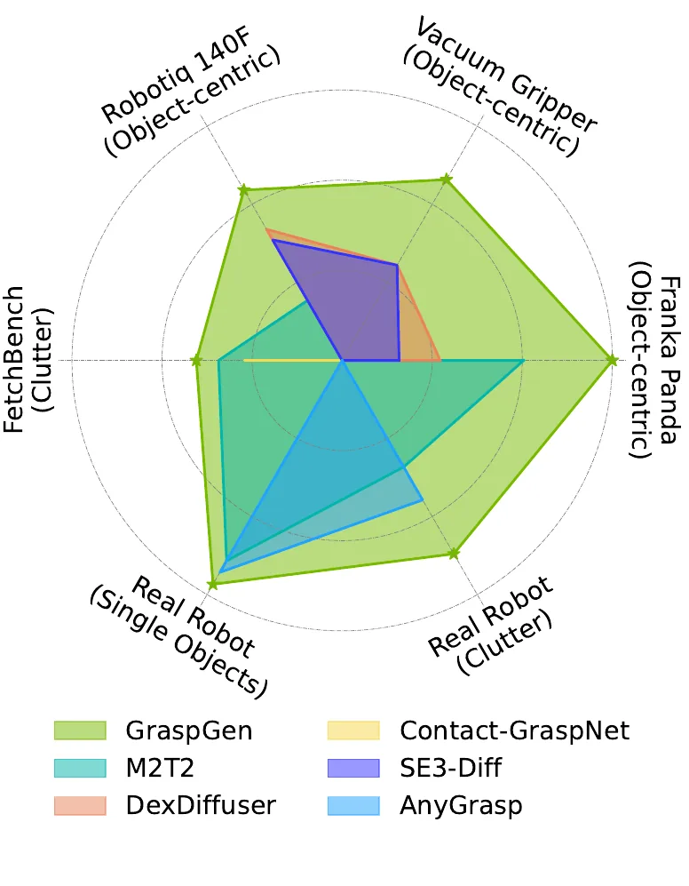
6-DOF 抓取。通常写成位姿检测问题，分抓取采样（GS）和抓取分析（GA）两部分。GS 用生成模型：自回归、VAE、扩散（SE(3)-DiffusionFields 等）。GA 通常是判别器打分排序。也有单模型同时做两件事的，比如 Contact-GraspNet 的接触点表示和 M2T2 的 transformer 扩展。输入可以是点云、隐式表示或体素。GraspGen 要求物体中心的点云。
应用。杂乱场景的目标抓取、动态抓取、语言引导操作都把 6-DOF 抓取网络当子模块。作者因此把框架设计成模块：直接以物体点云为输入，省去训练时对整个场景的建模；既支持单视角，也支持多视角。
机器人里的扩散模型。已用于视觉运动策略、抓取、运动规划、重排、场景生成。最接近的两篇：SE(3)-DiffusionFields 提出把 6-DOF 对跖抓取写成扩散过程（已知物体，无点云输入）；DexDiffuser 推广到灵巧手和点云观测，并加了判别器。GraspGen 在此之上给出新的大规模多夹爪数据集，并同时改进 GA 和 GS。
目标是生成大量且空间上分散的成功抓取。要分散，是因为杂乱场景里很多本来能成功的抓取够不到或会碰撞，运动规划器在推理时要把它们滤掉，候选只有足够分散才能剩下一些。实际要的是物体的 top-K，所以生成后还要打分排序（§3.2）。
它预测的是夹爪基座的空间姿态，不是一段动作轨迹，也不是多指灵巧手的整套关节运动。三种夹爪的结果展示了方法适用范围，但不意味着一个统一权重可零样本接收任意新夹爪。
自己画的 · 11 幕 3D 框架动画（第 6 到 11 幕的抓取由页面当场训练的小网络产生）
分割和部分点云、PTv3 序列化、噪声头、两个调度器、可调步数的玩具去噪、判别器、On-Generator 与离线的切换、EMD、和 GAN 的区别、规划器筛选和论文结果。这是平面上的玩具，不是 GraspGen 的权重。
对一个具体物体，抓取分布是连续且高度多峰的，适合生成模型。扩散模型的做法是训练时给数据逐步加噪，推理时反过来从噪声生成数据。
为什么用 DDPM。SE(3)-DiffusionFields 学的是能量模型，配分数匹配 Langevin 动力学（SMLD），采样时要计算能量网络的对数概率梯度，慢。作者改用 DDPM：一个迭代去噪过程，经验上更快也更好实现，这两种范式也已被证明等价。
SE(3) 上怎么做。DDPM 针对欧氏空间 \(\mathbb R^n\)，旋转不是欧氏的。和 SE3-Diff 一样，把 SE(3) 分解成 \(SO(3)\times\mathbb R^3\)，在 \(\mathbb R^3\) 和 SO(3) 的李代数上做扩散。李代数向量就是轴角：方向是旋转轴，长度是旋转角，它住在普通的 \(\mathbb R^3\) 里。噪声预测网络以点云编码为条件，所以是条件扩散。
平移归一化。网络喜欢归一化的输入输出。旋转有界 \([-\pi,\pi]\)，平移无界，且依赖物体尺度和姿态。作者不搜参，而是从数据统计算一个倍数：
\[\kappa=\frac{1}{\frac1N\sum_{i=0}^{N}\big(\max(t_i)-\min(t_i)\big)}\]其中 \(t_i\) 是物体 \(i\) 的全部正样本抓取 \(\mathcal G_i^+\) 的平移。
论文求和从 0 到 N 而除以 N，差一项，应是笔误。\(\max(t_i)-\min(t_i)\) 也没说是向量还是标量。代码 calculate_dataset_kappa 给出了答案：每个物体算每轴的范围（3 个数），全部物体全部轴一起求平均，再取倒数。
代码还做了论文没说的一件事：点云也乘 κ（depth = self.kappa * depth），不只是抓取平移。所以 PTv3 的 grid_size = 0.01 是 κ 尺度下的，换回米，Franka 约 3.06 mm。
反算平均范围（我的算术）：Franka \(1/3.27=30.6\) cm，Robotiq \(1/2.02217=49.5\) cm，吸盘 \(1/3.764=26.6\) cm。三个 κ 出自 runs 脚本和发布的 yml。
物体编码。此前的 6-DOF 抓取论文多用 PointNet++。作者说就所知没有生成式抓取论文用过点云 transformer，这里用 PointTransformerV3。PTv3 先把点序列化成结构化格式，再在上面跑 transformer，绕开了以往层次化点云处理里最耗时的近邻球查询。
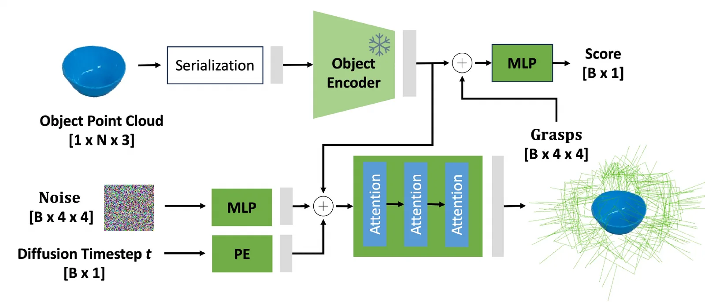
扩散网络。点云和抓取都先移到点云均值中心。推理时采样 B 个噪声，反复执行反向过程。作者经超参数搜索发现 \(T=10\) 步够用：图像扩散常跑几百步，他们猜测抓取只有 3+3 维，远低于图像（224×224 超过 5 万维），所以简单。损失是预测噪声和真实噪声的差：
\[L=\big\|\epsilon-\varphi(t,\tilde g,\mathcal X)\big\|_2^2\]\(\varphi\) 是噪声预测网络，\(\mathcal X\) 是物体点云。训练时随机取 \(t\in[0,T]\)，给真值抓取 \(g\in\mathcal G^+\) 加噪得 \(\tilde g=g+\epsilon\)。时间和抓取分别过位置编码和 MLP。作者发现平移和旋转各用一个调度器跑两个去噪过程比单个 DDPM 好。判别器分开训练，不参与扩散训练。
论文写 \(\tilde g=g+\epsilon\)，这只是示意。代码走的是 DDPM 标准形式 \(\tilde g=\sqrt{\bar\alpha_t}\,g+\sqrt{1-\bar\alpha_t}\,\epsilon\)（add_noise）。\(t\) 也不是 \([0,T]\)，而是整数 0 到 9（torch.randint(0, 10, …)）。旋转还额外除了 π，把轴角缩放到大约 \([-1,1]\)。损失的差异见实现核对。
自己画的 · 11 幕 3D 结构拆解（序列化码、分块、各阶段点数对玩具杯子当场算）
“PTv3 先把点序列化成结构化格式”具体是什么：第 2 幕记格号，第 3 幕按空间填充曲线给每个点一个整数码再排序（下面嵌的就是这一幕，可以点格子看码怎么算），第 4 幕每 K 个点切一块做注意力，第 5 幕一个 Block 的内部，第 6 幕池化，第 7 幕平均成 512 维。第 8、9 幕是噪声头和 10 步去噪。
论文把 SE(3) 分为平移 ℝ³ 和旋转 SO(3)，使用旋转的李代数向量表示。所核对脚本设置 r3_so3，所以网络样本维度为 6。另一种可选的 r3_6d 表示需要 3+6=9 个数，但仍描述六自由度刚体位姿。
点云和抓取先转到物体点云的均值中心附近，再用数据统计得到的 κ 同时缩放点云坐标和抓取平移（读者注 2）。Franka 示例脚本取 κ=3.27；这不是所有夹爪和所有数据通用的常数（Robotiq 2.02217，吸盘 3.764）。旋转、平移分开使用噪声调度器，也不代表有两个完全独立的去噪网络。
Point Transformer V3 将三维点按空间填充顺序序列化，在序列分组内计算注意力，再分层池化。GraspGen 使用其 cls_mode=True 分支，最终按物体求均值，得到一个 512 维全局描述。几何关系在 PTv3 内建模；传给下游噪声头的是全局向量。
| PTv3 阶段 | 1 | 2 | 3 | 4 | 5 |
|---|---|---|---|---|---|
| 输出通道 | 32 | 64 | 128 | 256 | 512 |
| Transformer block 数 | 2 | 2 | 2 | 6 | 2 |
| 注意力头数 | 2 | 4 | 8 | 16 | 32 |
| 阶段间 stride | — | 2 | 2 | 2 | 2 |
代码默认序列化顺序包含 Z-order、Hilbert 及其变体；各阶段 patch size 配置为 1024，实际分组还受输入点数影响（enable_flash=False 时，代码取 1024 和本批里点数最少那个物体的点数中的较小值；所以批里有小物体时，大物体也会被切成更多组。物体点数不超过这个值时只有一组，组内注意力就是这个物体上的全局注意力）。它没有固定输出 25 个 patch 供图网络读取，因此不能沿用 T(R,O) Grasp 的 token 数来画这张图。
以上 block 重复 3 次；每个抓取候选位于 batch 轴。
在此 cat_attn 路径，三个向量沿通道拼接，然后 unsqueeze(0) 得到 [1, batch, 1536]。MultiheadAttention 使用序列优先布局，因此序列长为 1，不是 3，也不是候选数量。单个 token 的 softmax 只有一个元素，其注意力权重为 1。
所以不能把它解释为“在这个头里，抓取查询动态挑选多个物体 patch”。PTv3 仍有空间注意力；噪声头保留投影、残差、归一化与 FFN 等运算。这里的判断只针对公开脚本选中的路径，不把仓库里的可选 cross_attn 分支当成论文实验默认配置。这三个发布配置（Franka、Robotiq、吸盘的 yml）都是 cat_attn。
另外论文图 2 把噪声和抓取都标成 [B×4×4]，代码进网络的是 [B, 6]。
这是静态形状分析，属于阅读者对代码的推导，没有运行权重或验证该实现对性能的贡献。
论文只说两个调度器分开更好。代码（generator.py）平移用 scaled_linear，旋转用 squaredcos_cap_v2，都没有传 beta_start、beta_end，所以取 diffusers 默认值 \(10^{-4}\) 到 \(0.02\)（requirements 钉在 0.11.1，我读了这个版本的源码）。这个默认范围本来配 1000 步。余弦调度不用这两个数，所以不受影响。按公式算（我的算术）：
| t | 0 | 1 | 2 | 3 | 4 | 5 | 6 | 7 | 8 | 9 |
|---|---|---|---|---|---|---|---|---|---|---|
| 平移 \(\bar\alpha_t\) | .9999 | .9993 | .9978 | .9949 | .9902 | .9834 | .9740 | .9618 | .9463 | .9274 |
| 旋转 \(\bar\alpha_t\) | .9721 | .8987 | .7869 | .6475 | .4938 | .3408 | .2031 | .0940 | .0241 | .00002 |
也就是平移最大噪声时 \(\tilde g=0.963\,g+0.270\,\epsilon\)，信号还在。而推理从 \(\mathcal N(0,I)\) 开始（torch.randn），平移的起点比训练时的输入分散得多。旋转则是真正的纯噪声。所以两个调度器不只是形状不同，最终的 \(\bar\alpha\) 差了 4 个量级。
反向更新 \(x_{t-1}=c_0\hat x_0+c_t x_t\)，平移的 \(c_t\) 从 0.73 降到 t=0 时的 0，所以最终结果基本由各步预测的 \(\hat x_0\) 决定，初始噪声会被冲掉，模型因此仍可能工作。但这时第一步的网络是在它没见过的输入上外推，再靠 clip_sample 把 \(\hat x_0\) 裁到 \([-1,1]\)。
发布的三个 yml 都是 10 步、compositional，所以不是脚本独有。我没有运行权重，不能说这影响了多少，也不知道作者是否有意，论文没提。论文说的“outliers far away from the object”和“低似然噪声样本”也许和这有关，这是猜测。玩具（第 5、6 幕）里 T = 10 时：代码调度成功 63.3%，碰撞 100 个、太远 323 个；两路都用余弦成功 68.3%，碰撞 249 个、太远 33 个（各 1500 个样本）。玩具只说明这个选择会改变错误的类型，不能外推。
玩具的 T 扫描（代码调度，成功率）：T = 2 28.3%，T = 5 59.9%，T = 10 63.3%，T = 20 68.4%，T = 50 67.6%。方向和论文“T = 10 够用”一致，但这只是三维玩具。
只用成功样本训练的生成模型，因拟合误差会产生假阳性，所以需要在执行前打分、排序、过滤。此前的工作也用单独学习的判别器。作者提出两点改进。
On-Generator 训练。仿真到真实的抓取模型通常在离线的成功集 \(\mathcal G^+\) 和失败集 \(\mathcal G^-\) 上训练。但生成模型的分布 \(\hat{\mathcal G}\) 和离线数据不同，作者认为原因是采样方式：例如 ACRONYM 的失败抓取从不碰撞物体，而扩散模型生成的有些抓取轻微碰撞（拟合误差），还有些是离物体很远的离群点（低似然的噪声样本）。作者假设用 On-Generator 数据训练判别器能消除这些失败模式。做法：在训练集上跑生成器推理（约 7K 物体，每个 2K 样本），用和离线数据相同的流程仿真标注，规模和原离线数据接近。
注意第 3 行只用 \(\mathcal G^+\)，第 6 行的输入是 \(\hat{\mathcal G}\)。算法写的是判别器只用 On-Generator 数据；\(\mathcal G^-\) 在算法里作为输入出现但没有被任何一步使用。
高效评估。此前的判别器（6-DOF GraspNet、Lum 等）有自己的物体编码器，从头训练。这里复用生成阶段的编码器，加一个 MLP 接物体嵌入和抓取位姿，输出 sigmoid 分数。另一个决定是怎么组合两者：6-DOF GraspNet 把抓取变成夹爪上的几个点，和物体点云拼接，带分割标记过 PointNet；这里直接把物体嵌入和 \(SO(3)\times\mathbb R^3\) 的抓取表示拼接。判别器和生成器分开训练，只有最后的 MLP 从头训练，用二元交叉熵；生成器的编码器冻结复用。
判别器回答的是：“对这个物体，在这个位姿抓下去，会不会成功？”它不判断抓取是数据集中的“真样本”还是生成器产生的“假样本”。生成器采样的成功抓取是正例，失败抓取是负例。
自己画的 · 结构拆解第 10 幕：判别器（方块可点；候选分数是示意）
物体经冻结的 PTv3 得到 512 维，候选抓取经 MLP 得到 512 维，拼成 1024 后过 1024 → 512 → 256 → 1，sigmoid 得分。右上角是按分数排序、过滤，以及训练时 top-75% BCE 怎么算。第 11 幕讲训练时梯度往哪走。
相比为每个候选都把夹爪控制点和物体点云拼成一个大点云重新编码，先得到可复用的物体描述再接轻量 MLP，能减少重复计算与中间特征。论文的“21 倍更省显存”是特定判别器比较条件下的结果，不是整个机器人系统在任意设置下都省 21 倍。
另需区分复用训练出的编码器权重与部署中 G / D 只做一次物体编码。公开组合模型分别实例化生成器和判别器，forward 先调用 G，再调用 D；本页不会据论文的 reuse 一词声称所有发布路径都共享同一缓存张量。
§3.2 写“只有最后的 MLP 层从头训练”。代码里从头训练的是两个部分：把抓取编码成 512 维的 sample_encoder（\(6\to512\to512\)）和 prediction_head（\(1024\to512\to256\to1\)），合计约 92 万参数（我的算术）。大意没错，字面上不止一层。
冻结也不是自动的，要显式给 checkpoint_object_encoder_pretrained。runs 脚本没传（配置默认 null）。发布的 yml 不同：Franka 写 graspgen_franka_panda_gen.pth，Robotiq 和吸盘写 null。所以至少从配置看，Franka 走论文配方，其他两个不是。我没有下载权重去比较编码器参数是否真的相同。
离线随机采样得到的失败抓取，与模型实际生成的失败抓取未必一样。例如离线数据已过滤穿入物体的抓取，而扩散模型可能产生“只差几毫米、却轻微穿模”的候选。只训练离线失败集，评分器可能恰好不认识这些错误。
先学习成功抓取分布。推理时，G 能生成多个合理但不保证全部有效的候选。
论文算法对约 7K 物体、每个 2K 候选重新评估。标签依据物理成功，而非样本来自哪里；采样与仿真这条数据链不是反向传播链。
更接近对生成器误差做有针对性的质量评估。论文配方没有增加“让 G 骗过 D”的后续训练阶段。
判别器脚本的 RATIO=[0.25, 0.24, 0.00, 0.01, 0.00, 0.25, 0.25] 对应 7 类样本：离线正、离线负、碰撞难例、自由空间、回撤难例、on-policy 正、on-policy 负（MAPPING_ID2NAME）。这说明两件事：
onpolicy_dataset_dir（默认 null）。这时 load_discriminator_batch_with_stratified_sampling 把 on-policy 两份并回离线，不报错。实际比例是 50% 正、49% 负、1% 自由空间，全部是离线数据。README 也写明 On-Generator 尚未随判别器训练发布。README 说 On-Generator 会在数据生成仓库放出时发布；GraspDataGen 已在 2025-09-30 放出，同一条说明还在。另外 generate_negative_hardnegatives（扰动正样本造碰撞负例）已经实现，但比例设成 0；只有 1% 的自由空间负例，注释写的是“去掉模型的离群点”。这两类可以看作用离线手段模拟生成器错误的尝试，最后作者选了 On-Generator。这最后一句是我的推断。
| 问题 | 经典 GAN | GraspGen |
|---|---|---|
| D 的标签 | 真实数据 / 生成数据 | 抓取成功 / 失败 |
| G 的学习信号 | 通过 D 的可微评分，学习使生成样本被判为真 | 已知加噪过程的噪声监督 |
| D 是否参与 G 的训练 | 是，对抗目标使两者耦合 | 论文明确分别训练，D 不参与扩散训练 |
| 训练关系 | 围绕对抗目标交替优化 | 先训练 G → 采样 → 评估标签 → 训练 D |
| 推理用途 | 通常主要使用 G 生成 | G 提候选，D 排序和过滤，规划器检查可执行性 |
读者判断：将它称为“带成功率判别器的扩散抓取框架”更准确。它与 GAN 共享了生成、判别的词汇，但 On-Generator 的重点是修正评分器训练数据与实际候选之间的分布偏移。动画第 10 幕把同一批玩具样本按两种方式标注：GAN 全标“假”，GraspGen 按仿真结果，约三分之二是正例。
GraspGen 依据 §3.1、§3.2 / Algorithm 1；代码里 train.model_name 也是 diffusion 和 discriminator 分开跑。经典 GAN 对照参见 Goodfellow 等的原始论文。上面的 GAN 目标是常用非饱和生成器目标，不是声称 GraspGen 使用它。
数据集是一批物体网格、6D 夹爪变换和二值成功标签，流程沿用 ACRONYM。ACRONYM 基于 ShapeNetSem，这里换成许可更宽松、更大更多样的 Objaverse（论文）：选和 LVIS（论文）1,156 个类别重合、CC BY 许可的网格，共 36,366 个；为了和 ACRONYM 规模对齐，再随机选 8,515 个。每个物体在网格周围均匀采样 2K 个抓取，在 Isaac 仿真器里握住物体做摇晃，摇晃后仍有稳定接触就算成功。Franka Panda 和 Robotiq-2F-140 用这个流程；30 mm 吸盘用解析模型标注（Mahler 等）。每种夹爪约 1700 万个抓取。数据集在 HuggingFace（CC BY 4.0，见 README）。
8,515 × 2,000 = 1703 万，和“每夹爪约 1700 万”一致；× 3 = 5109 万。但摘要和表 3 写 5310 万（表 3 的 53.1M），README 写“over 57 million”。三个数我都复算不出彼此，差异的来源论文没解释。我没有下载数据集去数。ACRONYM 那行没问题：8,872 × 2,000 = 1774 万（表 3 的 17.7M）。
基线。接触点架构 M2T2、Contact-GraspNet；扩散架构 DexDiffuser、SE3-Diffusion Fields；以及 AnyGrasp。SE3-Diff 是作者重新实现的，有两点不同：用 PointNet++ 处理未知物体点云，用 DDPM 而非 SMLD 训练；它不给抓取打分，所以用近似对数似然代替。DexDiffuser 原本面向灵巧手，这里只保留位姿输入。VAE 基线跳过，理由是已在别的论文里被证明较差。
单物体完整点云。测试集 815 个物体，每个 2K 个抓取，共 160 万次执行（815 × 2000 = 163 万，对得上）。所有模型用同样的训练集和划分。M2T2 只用一个 transformer token，因为只有一个物体。流程和 §3.3 相同，抓取用孤立的自由漂浮夹爪尝试。这里用 ACRONYM 的 Franka 数据，GraspGen 数据集的结果在附录。Contact-GraspNet 跳过（M2T2 论文已比过）。AnyGrasp 因许可限制只能部署在注册机器上，没法在集群跑，所以只比了真机。
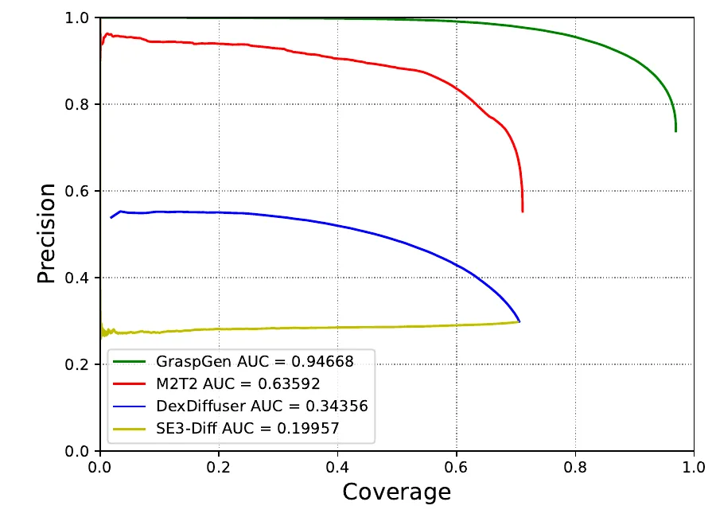
指标。精度是仿真成功率；覆盖率衡量空间多样性，是真值正样本集 \(\mathcal G^+\) 被预测抓取匹配上的比例，匹配用 1 cm 的最近邻。GraspGen 比基线的 AUC 高超过 48%。有判别的方法（GraspGen、DexDiffuser、M2T2）都胜过纯生成的 SE3-Diff，说明判别器重要；判别器质量也关键：GraspGen 因 On-Generator 比 DexDiffuser 打分更好；M2T2 只在正样本上训练，只区分接触点好坏，所以更差。
图 3 是矢量图。我用 pdftocairo -svg 取出曲线顶点，按坐标轴标定后做梯形积分，结果和图例吻合：M2T2 0.6357（图例 0.63592），DexDiffuser 0.3435（0.34356），SE3-Diff 0.1994（0.19957）。GraspGen 的曲线在覆盖率 0.188 以前被坐标轴上边界截掉了，积分 0.7586 加上 0.188 × 1.0 得 0.9466（图例 0.94668）。
所以 AUC 是把精度从 0 积分到曲线实际结束的覆盖率，不除以范围。一个精度高但覆盖率只到 0.7 的方法分数会被压低。这是合理的，因为 §3 要多样性，但读数时要知道：AUC 同时是精度和覆盖率的成绩，不能读成“成功率”。“超过 48%”是相对值：0.94668 / 0.63592 = 1.489。
代码有一个不同：metrics.compute_recall 默认半径是 2 cm，只比较平移，论文写 1 cm。这个函数是训练时的监控指标。我在仓库里搜 coverage 没有找到画这张图的评估脚本，所以不能断定两者不一致。
杂乱场景的任务级评估。FetchBench 模拟从感知、抓取检测、碰撞世界建模到运动规划的全流程：Franka Panda，100 个场景，每场景 60 个任务，共 6K 次抓取执行。为了只看抓取检测，运动规划（cuRobo）用场景真值碰撞网格。Oracle 规划器用数据集真值抓取，表示没有感知和模型问题时的上限。两个指标：任务成功率（抓取并放好）和抓取成功率（只算抓起来），后者总是更高。Oracle 也只有约 65% 和 49%：很多场景能抓却没有无碰撞退路；有些超出现有规划器的能力；有些物体姿态复杂，稳定抓取够不到。这些超出本文范围。GraspGen 超过 Contact-GraspNet 和 M2T2 16.9% 和 7.8%。
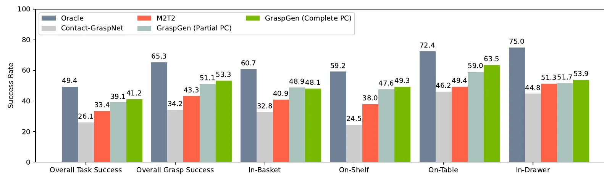
| 方法（%） | 总体任务 | 总体抓取 | 篮内 | 货架 | 桌面 | 抽屉 |
|---|---|---|---|---|---|---|
| Oracle | 49.4 | 65.3 | 60.7 | 59.2 | 72.4 | 75.0 |
| Contact-GraspNet | 26.1 | 34.2 | 32.8 | 24.5 | 46.2 | 44.8 |
| M2T2 | 33.4 | 43.3 | 40.9 | 38.0 | 49.4 | 51.3 |
| GraspGen（部分点云） | 39.1 | 51.1 | 48.9 | 47.6 | 59.0 | 51.7 |
| GraspGen（完整点云） | 41.2 | 53.3 | 48.1 | 49.3 | 63.5 | 53.9 |
数值是 PDF 柱顶的文字，顺序按柱的颜色对图例。
正文写 Oracle 任务成功率 49.2%，图上是 49.4%，差一点。“16.9% 和 7.8%”正文没说是哪个指标。我在表上试了各种差值，能同时算出这两个数的是部分点云的抓取成功率 51.1：51.1 − 34.2 = 16.9，51.1 − 43.3 = 7.8。所以它们是百分点，不是相对值；量的是抓取成功率，不是任务成功率（任务成功率上，完整点云比两个基线高 15.1 和 7.8）。这个对应是我反推的。
“篮内”一列 GraspGen 部分点云 48.9 高于完整点云 48.1，其余各列完整更高。
对遮挡的敏感性。此前的工作要么用单视角部分点云，要么用融合多视角的完整点云。图 5：只在部分点云上训练的 GraspGen 在完整点云上表现差，反之亦然；按 50-50 混合训练，两种都能泛化。
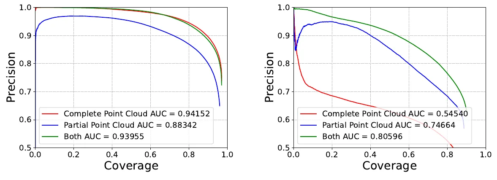
部分点云训练的模型在完整点云上还有 0.883，只比最好的低 0.058；完整点云训练的模型在部分点云上掉到 0.545，低 0.261。真正差的是后一个。更有意思的是右图：混合训练 0.806 高于只用部分点云训练的 0.747，即使测试全是部分点云。论文没有解释，可能是完整点云帮生成器学到了整体形状。这是我的猜测。公开脚本的 prob_point_cloud = 0.5 对应混合训练。
On-Generator 让模型认识自己的失败模式。作者先证明分布确实有偏移：用 Earth Mover's Distance（EMD，把一个分布搬成另一个的最小代价，§6.8）分别量正样本和负样本，覆盖整个训练集（约 7K 物体）。图 6 左：偏移明显不为零，负样本更大，因为失败抓取的空间（远的、碰撞的都算）比成功抓取（必须贴近物体表面）大得多。这个偏移说明判别器应当专门学习生成器的分布。
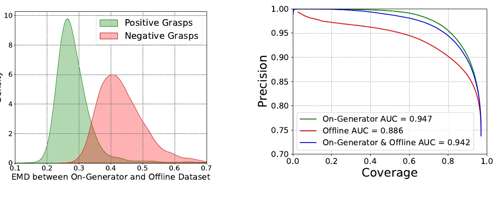
只用 On-Generator 数据训练的模型最好，只用离线的最差（AUC 低 6.5%）。作者的假设：On-Generator 更好地捕捉了扩散模型的假阳性。比如生成器会产生轻微碰撞的抓取，而离线数据只含无碰撞的；拟合误差也会带来小的平移或旋转偏差，导致抓取不稳。
“低 6.5%”：\((0.947-0.886)/0.947=6.4\%\)，若除以 0.886 是 6.9%，绝对差 0.061。三条线差别只在第三位时（0.947 对 0.942）没有误差棒，不能说两者有显著差异。图 6 左也没有画同分布两次采样的对照，所以 EMD 的底噪不知道；代码 dataset_utils.py 里算了 off-off-pos 这类键，说明作者是知道这一点的。
动画第 8、9 幕在玩具上当场复现了这个因果：离线负样本不碰撞（我按论文描述构造的），于是离线判别器把碰撞候选排到最前面。5 个随机种子：离线 AUC 0.38 到 0.59，top-100 里碰撞 41 到 76 个；On-Gen 0.76 到 0.94，碰撞 0 到 8 个；混合 0.78 到 0.91。EMD 也是负样本更大。两点限制：离线负样本的构造本身就决定了方向，所以它演示的是论文的解释，不是独立证据；玩具里混合 5 次有 4 次好于纯 On-Gen，和论文相反，这说明 0.947 对 0.942 这种差别在玩具上看不出。
判别器。和 SOTA 架构（6-DOF GraspNet）比，AUC 高 6.7%，显存少 21 倍，见 §6.6.2。
平移归一化。作者发现性能和倍数呈凸关系（图 7）。网格搜索能找到最优值，但按 §3.1 公式算出来的正好落在一个局部最优，是可靠的替代。Franka 是 κ = 3.27。
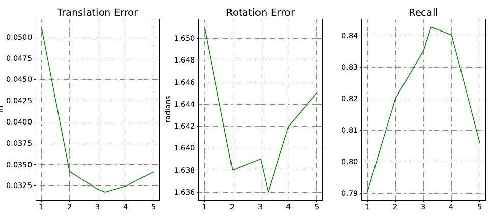
折线是矢量的，顶点坐标可读，每条线 6 个点，横坐标算出来是 κ = 1, 2, 3, 3.27, 4, 5（第 4 个点确实在 3.27）。按刻度标定：
| κ | 1 | 2 | 3 | 3.27 | 4 | 5 |
|---|---|---|---|---|---|---|
| 平移误差（m） | .0512 | .0342 | .0321 | .0317 | .0325 | .0342 |
| 旋转误差（rad） | 1.651 | 1.638 | 1.639 | 1.636 | 1.642 | 1.645 |
| 召回 | .790 | .820 | .835 | .842 | .840 | .806 |
三个指标确实都在 3.27 处最好，但只比了 6 个值。旋转误差的整个变化范围只有 0.015 rad，纵轴截得很紧，且在 κ = 2 到 3 之间并不单调，谈不上凸。还有一个对不上：这里旋转误差约 1.64 rad（94°），表 4 同样是 Franka、Lie Algebra 却是 0.535 rad。平移（3.17 对 3.008 cm）和召回（0.842 对 84.86%）都接近，唯独旋转差 3 倍。代码里有考虑夹爪对称的开关（consider_symmetry），也许是一个开了一个没开，但论文没写，这是猜测。
旋转表示。6D、欧拉角、李代数表现相当，见 §6.6.3。
点云编码器。PTv3 比 PointNet++ 明显好：平移误差少 5.3 mm，召回高 4%，见 §6.6.4。
GraspGen 在所有夹爪上都最好，但具体表现因形态而异。Franka 仿真优于 M2T2 37%（图 3），Robotiq 仿真（44%）和真机（57%）差距更大。作者认为 M2T2 的接触点表示为对称、非自适应夹爪设计，对 Robotiq-2F-140 这种自适应夹爪吃力。GraspGen 在三种夹爪上都胜过 SE3-Diff。
同一张图 3，§4.1 说高 48%，§4.4 说 37%。我算（括号里第一个是绝对差，第二个是相对值）：
§6.4 说 Robotiq 上“almost double”，实际是 2.84 倍。结论方向都没问题，这些具体的百分比不宜引用，直接引原始的 AUC 和成功率。还要注意图 9 里的 SE3-Diff 配的是 GraspGen 判别器（0.43190），而图 3 的 SE3-Diff 用近似似然（0.19957），两张图的 SE3-Diff 不是一回事。
硬件：UR10 机械臂，一个外参标定过的 RealSense D435 俯视桌面。运动规划 cuRobo 跑在 Jetson 上，nvblox 做避碰。SAM2 在 6000 Ada 上做实例分割，FoundationStereo 估计深度。评估的是在 GraspGen Robotiq-2F-140 数据集上训练的模型，完全在仿真里训练。
对比 M2T2（仿真里最好的竞争者）和 AnyGrasp（在真实彩色点云上训练的杂乱抓取框架，因许可限制没在仿真里比）。都用发布的权重和配置，但各有调整：M2T2 点云绕 z 转 90°，加一个覆盖工作空间的 3D 框裁剪，以匹配其训练分布；AnyGrasp 沿相机 z 轴加平移，因其训练数据在固定相机深度采集。不做非极大值抑制效果更好，大概因为规划器擅长处理目标集。作者说不做这些修改就得不到稳定的预测。所有模型都输出抓取和分数，取 top-100 作为规划目标，规划器滤掉碰撞和无 IK 解的。
四种设置：孤立物体、桌面多物体、篮内、货架。
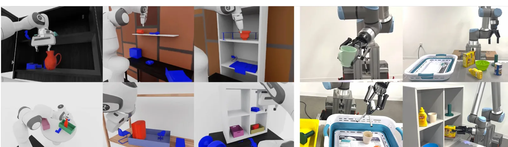
| 方法 | 孤立物体 | 杂乱 | 总体 | ||
|---|---|---|---|---|---|
| 桌面 | 篮内 | 货架 | |||
| GraspGen | 90.5% | 83.3% | 80.0% | 71.4% | 81.3% |
| M2T2 | 81.0% | 75.0% | 40.0% | 14.3% | 52.6% |
| AnyGrasp | 85.7% | 83.3% | 42.9% | 42.9% | 63.7 |
GraspGen 总体 81.3%，比 M2T2 和 AnyGrasp 高 28% 和 17.6%。货架和篮内最难，cuRobo 因运动学和碰撞限制滤掉大部分抓取，所以模型既要泛化到这些环境，又要有足够的覆盖率，这样滤完还有得选。M2T2 和 AnyGrasp 都是场景中心模型，只用桌面杂乱数据训练，到了复杂环境就不泛化。M2T2 还对一些小物体不产生抓取，可能因为场景级点云在小物体上分辨率太低。更多例子见附录。
总体是四列的算术平均，我验算三行都吻合：81.25、52.575、63.7（AnyGrasp 那格原文没有 %）。所以四种场景权重相同，不是按试验次数加权。
论文没写试验次数。如果成功率是整数次除以同一分母，能反推最小分母（一行内三种方法共用，我的枚举）：孤立 21 次（19、17、18），桌面 12 次（10、9、10），货架 7 次（5、1、3）。篮内三个数 80.0、40.0、42.9 要 35 次才能共用分母（28、14、15），否则 AnyGrasp 用了 7 次而另两个用 5 次的倍数。所以货架的 71.4% 很可能是 7 次里 5 次，单格的置信区间很宽。这是反推，不是论文给的数。
差值：81.3 − 52.6 = 28.7，正文写 28；81.3 − 63.7 = 17.6 正确。
对比并不完全对称。§6.4 透露真机 M2T2 用的不是 Robotiq 模型，而是 Franka 模型加 −10 cm 偏移，因为 Robotiq 版太差。§4.5 只说用“发布的权重和配置”。
真机模型的骨干。公开的 Robotiq 脚本（BACKBONE="pointnet"）和发布 yml（obs_backbone: pointnet）都是 PointNet++，而 Franka 和吸盘是 PTv3。论文的主线是 PTv3，但表 1 那个 Robotiq 模型用什么骨干，论文没写。所以“PTv3 带来的提升”不能直接搬到真机结果上。
GraspGen 是改进了扩散模型的 6-DOF 抓取生成框架，在多种物体和三种夹爪上验证，优于基线，在 FetchBench 上达到最好。作者希望它成为下游应用的基础。
局限：依赖深度和实例分割的质量；对方盒类物体预测不好，作者认为用更多方盒数据（下一版打算做）能解决；计算量大，数据生成和训练约需 NVIDIA V100 8-GPU 节点 3K GPU 小时。
“3K GPU 小时”没有拆分数据生成和训练。README 的估计是 8 × A100 节点上生成器 3K epoch 约 40 小时、判别器约 90 小时，合计约 1040 GPU·小时，这只是训练一轮（我的算术）。论文说 V100，README 说实验在 A100 上跑。公开脚本是 NGPU=1、NEPOCH=5000，用时要自己换算。
表 2 是真机实验的定性结果。GraspGen 的预测更集中在目标物体，覆盖率更大。M2T2 有时对目标物体完全不出抓取（第 2 行的甜椒），特别是小物体：场景中心模型里小物体上点太少，这在场景级推理里无法避免。M2T2 还会在环境中产生假阳性，可能渗入相邻目标的接触掩码。分割后真实物体点云上的更多预测见图 12。
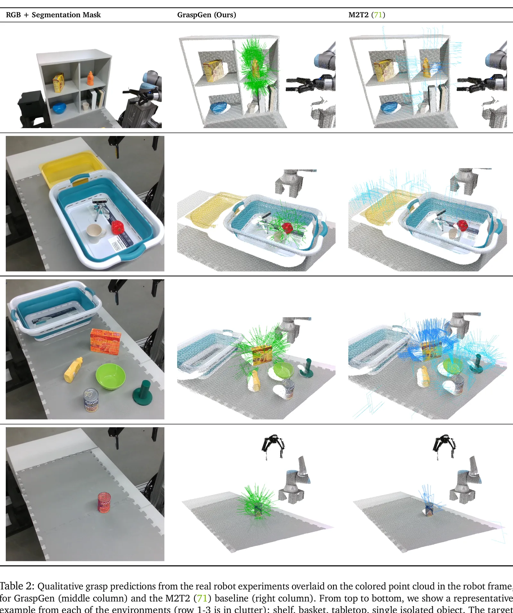
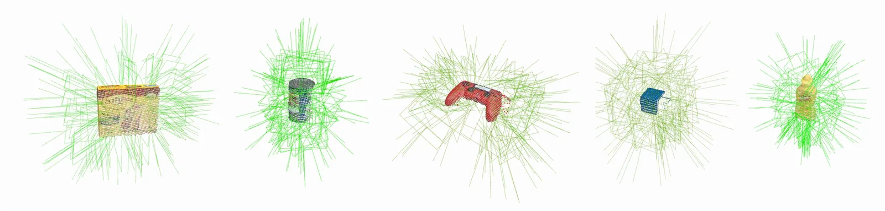
| 数据集 | 年 | 夹爪数 | 物体数 | 抓取数 | 标签 | 合成方法 | 代码+数据 |
|---|---|---|---|---|---|---|---|
| HO-3D（论文） | 2020 | 1（人手） | 10 | 78K | 只有正 | 人类演示 | ✓ |
| EGAD（论文） | 2020 | 1（2 指） | 2,331 | 233K | 只有正 | 进化算法 | ✓ |
| DDG（论文） | 2020 | 1（5 指） | 500 | 50K | 只有正 | GraspIt + 改进 Q1 | ✗ |
| DexYCB（论文） | 2021 | 1（人手） | 20 | 582K | 只有正 | 人类演示 | ✓ |
| Acronym | 2021 | 1（2 指） | 8,872 | 17.7M | 正和负 | Flex | ✓ |
| UniGrasp（论文） | 2020 | 12（2 和 3 指） | 1000 | 2M+ | 只有正 | 接触点网络 + FastGrasp | ✓ |
| DexGraspNet（论文） | 2023 | 1（5 指） | 5,355 | 1.3M | 只有正 | 可微抓取 | ✓ |
| Fast-Grasp’D（论文） | 2023 | 3（3 到 5 指） | 2,350 | 1M | 只有正 | 可微抓取 | ✗ |
| GenDexGrasp（论文） | 2023 | 5（2 到 5 指） | 58 | 436K | 只有正 | 可微抓取 | ✓ |
| MultiGripperGrasp（论文） | 2024 | 11（2 到 5 指和人手） | 345 | 30.4M | 分级 | GraspIt + Isaac Sim | ✓ |
| GraspGen | 2025 | 3（2 指和吸盘） | 8,515 | 53.1M | 正和负 | 采样 + Isaac Sim | ✓ |
物体中心的仿真用精度-覆盖率 AUC（Franka 见图 3，Robotiq 见图 9）。吸盘没训练 M2T2（接触点表示不能直接用），只比较 GraspGen 和 SE3-Diff 生成器的覆盖率。FetchBench 和真机用抓取成功率（图 4、表 1）。所以雷达图的不同轴量纲不同，只能一个轴一个轴读。
图 9：GraspGen 大幅领先，AUC “几乎是 M2T2 的两倍”。M2T2 的接触点表示为对称、非自适应夹爪设计，不能直接迁移到 Robotiq-2F-140。因为 Robotiq 版 M2T2 太差，真机实验（表 1）改用 Franka 版 M2T2，加固定平移偏移（沿 z −10 cm）。
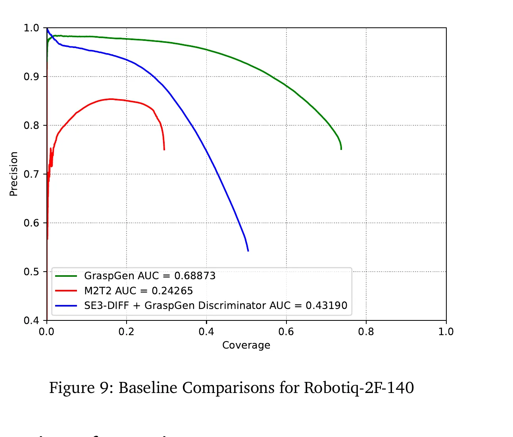
| 方法 | 平移误差 (cm) | 旋转误差 (rad) | 覆盖率 (%) |
|---|---|---|---|
| GraspGen | 7.79 | 1.83 | 73.1 |
| SE3-Diff | 6.12 | 1.87 | 38.5 |
吸盘沿接近方向对称，所以旋转误差大。GraspGen 的 L2 平移误差略高，但覆盖率大得多。作者把学习难度从难到易排成 Franka、吸盘、Robotiq，归因于夹爪复杂度：吸盘对称，Robotiq 欠驱动。
原文这句是 hardest to easiest：Franka、suction、Robotiq。但 GraspGen 自己的 AUC 是 Franka 0.947（图 3）或 0.909（图 10b，GraspGen-Franka 数据）远高于 Robotiq 0.689（图 9）。论文没说“学习难度”用什么量。要么排序写反了，要么指的是别的量（比如误差）。而且紧接着解释“Robotiq 欠驱动”听起来更像是难的理由。我没有办法判断，只能说它和论文给出的 AUC 不一致。表 6 原文表头第一列写的是“Object Encoder”，实际是方法名，这里改了。
6.6.1 数据集。为了说明 GraspGen 数据集可比，用算法 1 分别在 ACRONYM 和 GraspGen-Franka 上训练，各在两个测试集上测。ACRONYM 训练的模型略好，甚至在 GraspGen 的测试集上也是。作者猜测原因是仿真器不同（ACRONYM 用 Flex，这里用 PhysX）和形状数据集不同（ShapeNet 对 Objaverse）。
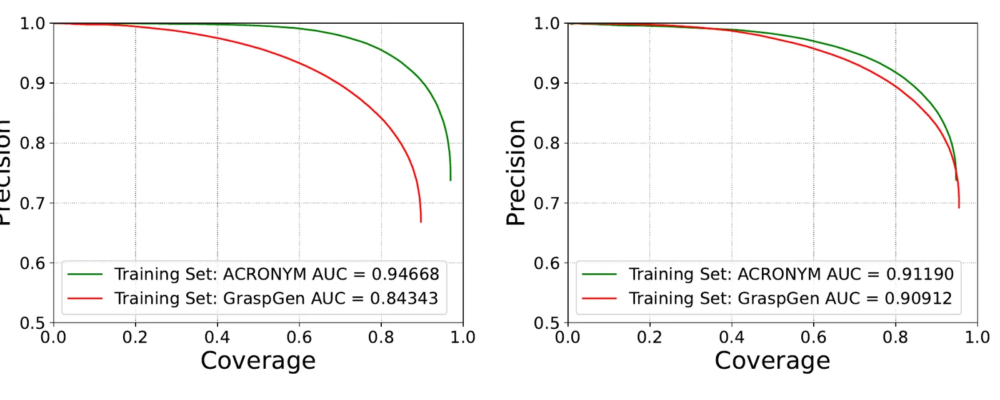
6.6.2 判别器。和 6-DOF GraspNet 的判别器架构比（图 11）。AUC 高 6.7%，判别分数的 mAP 高 5.87%，同批大小显存少 21 倍。原因：6-DOF GraspNet 把抓取 \(g\in SE(3)\) 变成抓取点云 \(X\in\mathbb R^{N\times3}\)（\(N=5\)，夹爪上的预定义点），带分割标记（区分夹爪和物体）输入 PointNet++，显存按 \(\mathcal O(N\times B)\) 增长。GraspGen 直接传位姿，按 \(\mathcal O(B)\) 增长，也不复制点云；还复用了编码器（网络中最大的部分）的权重，不再训练。
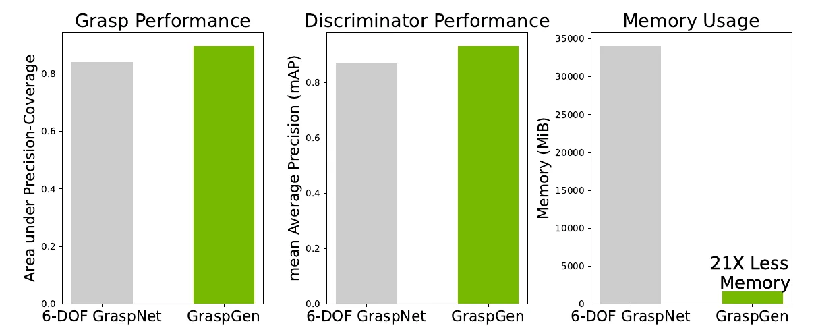
柱子是矢量矩形，按刻度读（我的读数）：AUC 0.839 对 0.896，相对高 6.8%，和 6.7% 相符；mAP 0.872 对 0.933，相对高 7.0%，差 0.061，和 5.87% 略有出入；显存 34,053 对 1,611 MiB，比值 21.1，相符。
批大小论文没写，所以 34 GB 这个绝对值无从比较。\(N=5\) 也解释不了 21 倍：\(\mathcal O(N\times B)\) 里的 \(N\) 只有 5。6-DOF GraspNet 那边是把物体点云和夹爪点一起按候选复制，所以真正的倍数来自点云大小，这是我的理解，论文的 \(N\) 只数了夹爪点。这个数比较的也只是判别器阶段。公开的组合模型里 G 和 D 各有一个编码器实例（见判别器结构）。
6.6.3 旋转表示。比较三种（表 4）。所有输入先缩放到 \([-1,1]\)。6D 表示是拼接旋转矩阵的前两列。三者表现相当，说明适当的归一化才是大规模抓取数据上扩散学习的关键。其他实验都用李代数。
| 表示 | 范围 | 平移误差 (cm) | 旋转误差 (rad) | 覆盖率 (%) |
|---|---|---|---|---|
| 6D | [−1, 1] | 3.126 (± 0.0372) | 0.557 (± 0.003) | 84.86 (± 0.301) |
| 欧拉角 | [−π, π] | 3.047 (± 0.0045) | 0.541 (± 0.001) | 84.78 (± 0.142) |
| 李代数 | [−π, π] | 3.008 (± 0.0200) | 0.535 (± 0.002) | 84.86 (± 0.096) |
6.6.4 点云编码器。PointNet++ 仍是机器人里最常用的骨干。PTv3 带来明显提升（表 5）：平移误差少 5.3 mm，召回高 4%。作者猜测数据规模越大差距越大。
| 物体编码器 | 平移误差 (cm) | 旋转误差 (rad) | 覆盖率 (%) |
|---|---|---|---|
| PointNet++ | 3.724 (± 0.0221) | 0.637 (± 0.0011) | 79.15 (± 0.114) |
| PointTransformerV3 | 3.126 (± 0.0372) | 0.557 (± 0.003) | 84.86 (± 0.301) |
表 5 的 PTv3 行和表 4 的 6D 行完全相同，连误差棒都一样（3.126 ± 0.0372，0.557 ± 0.003，84.86 ± 0.301）。所以这个骨干消融看来是在 6D 表示上做的，而 §6.6.3 写“其他实验都用李代数”。如果两个骨干都用 6D，比较本身还成立，但和文字不一致。表 5 的 PointNet++ 行用什么表示没写。
§4.3 和 §6.6.4 的数和表 5 不同。3.724 − 3.126 = 0.598 cm，约 6.0 mm，正文两处都写 5.3 mm。84.86 − 79.15 = 5.71 个百分点，正文写 4%。若拿李代数那行（3.008）算差值是 7.2 mm，更不对。
表 4 的范围一列：6D 写 \([-1,1]\)，其他写 \([-\pi,\pi]\)，而正文说全部缩放到 \([-1,1]\)；代码 matrix_to_rt 对轴角和欧拉角确实除了 π。表里写的应是缩放前的自然范围。论文也说李代数和 6D 的覆盖率相同，均值差异都在误差棒的几倍以内，说它们“相当”是公道的。
作者在 Isaac Sim 里重新实现 FetchBench。只比较抓取生成，所以不依赖规划器差异，用场景真值碰撞网格。Oracle 用 “FetchMeshCurobo”，Contact-GraspNet 用 “FetchMeshCuroboPtdCGNBeta”，后者只尝试一次，不重试。原文这一段的括号没有闭合，也没说 M2T2 和 GraspGen 用哪个配置，这里如实留空。
要量生成器数据 \(\hat{\mathcal G}\) 和训练集 \(\mathcal G\) 的偏移。对同一物体，从两边各抽 500 个抓取。对任意 \(g_i\in\mathcal G,\ g_j\in\hat{\mathcal G}\)，距离取 SE3-Diff 的代价：
\[d(g_i,g_j)=\|t_i-t_j\|+\big\|\mathrm{LogMap}(\mathbf R_i^{-1}\mathbf R_j)\big\|\tag{1}\]然后解线性指派问题，也就是找使总距离最小的一一配对。重复 5 次随机子采样，平均得到这个物体的分数。
代码 compute_pose_distance_batch 和 compute_pose_emd 与式 (1) 一致，文档写“位置和旋转等权重”。但平移的单位是米，旋转的单位是弧度，直接相加意味着 1 cm 的平移和 0.01 rad（约 0.6°）的旋转代价相同，旋转的分量因此占比很重。读图 6 左的 EMD（0.25 到 0.4）要带上这一点，它不能换算成“差几厘米”。论文没讨论权重，这只是提醒。
噪声和增强对 sim2real 很关键。每次训练迭代对点云做：点云中心化后随机旋转；随机相机视点；随机子采样点；模拟实例分割误差。
SAM2 这样的分割模型虽好，有时会在物体边界溢出，投到 3D 就成了明显的离群点。图 13 左（直立的橙色盘子）里，模型以高置信度在离群区域生成抓取，这可能让机器人撞上桌子或墙。训练时用 Scene Synthesizer 把物体放在支撑面上，渲染分割掩码再膨胀，造出人工离群点。图 13 右是这样训练后的结果，离群点被忽略。
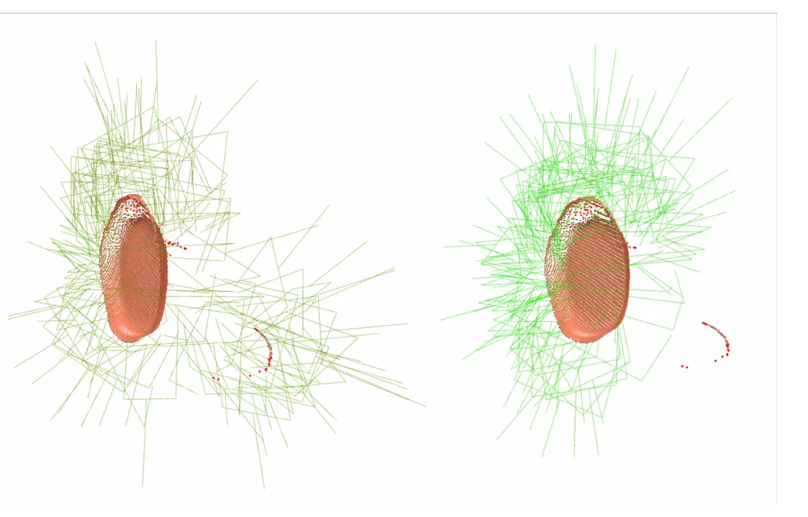
随机旋转（rotation_augmentation）、部分点云（prob_point_cloud）、子采样都能在代码里找到。分割误差只找到一半：renderer.py 里定义了 add_noise_to_random_object_region，但我在 grasp_gen 和 scripts 下没找到调用它的地方，也没搜到 dilate 掩码的代码。这是“我没找到”，不是确认没有。部署侧另有一个论文没提的步骤：grasp_server 默认 remove_outliers=True，推理前用 kNN 距离（阈值 0.014）去掉离群点，所以公开推理路径对离群点有第二道防线。
模型训练好后，用户要选两个超参数：过滤阈值和扩散采样数量。图 14 看批大小（横轴）和阈值对过滤后精度的影响。阈值很低（低于 0.5）时精度差，符合预期。阈值提高后，留下的抓取变少，精度也会降低。高阈值要配大批量才好。
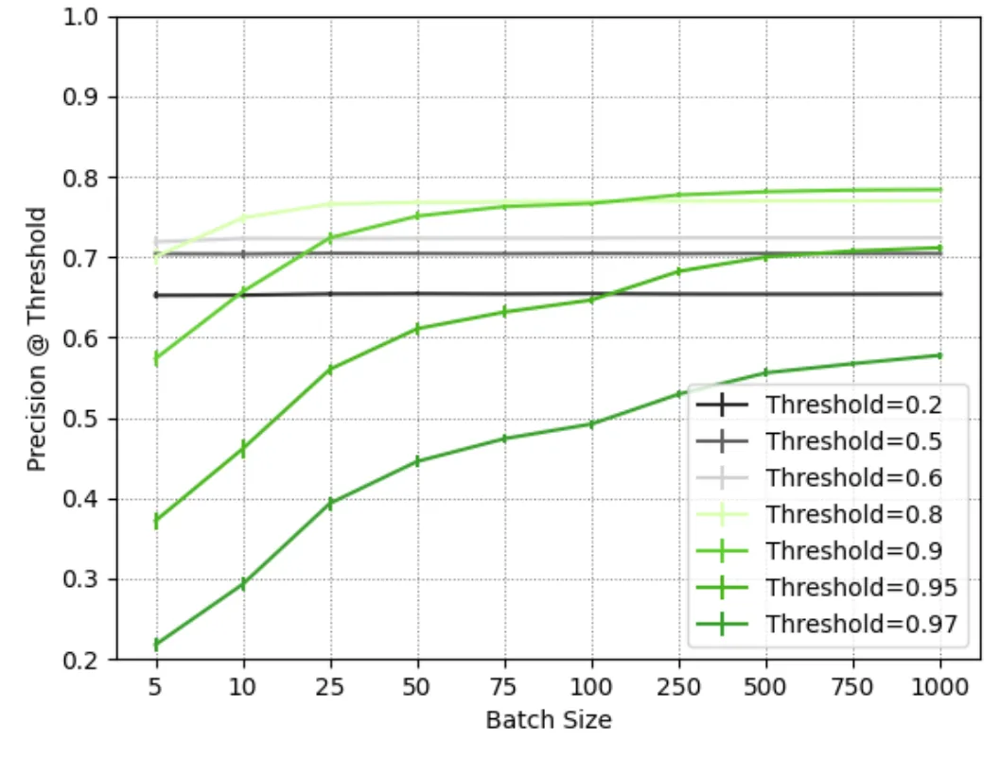
一般来说，判别器有用的话，阈值越高，留下的越准。图 14 在小批量时相反：阈值 0.97、批 5 只有约 0.22。作者的解释是留下的少了。这个说法要成立，“没有抓取留下”必须算作精度 0。这样算的话，这条指标在小批量时量的其实主要是“有没有候选过阈值”，不是留下的那些好不好。论文没写空集怎么算，这是我的推断。
实际用法上，大批量（1000）时 0.8 到 0.9 的阈值约 0.78，到顶了。代码的默认是采 200，取 top-100，并不用阈值。玩具（第 7 幕）可以切换阈值和批大小看同样的权衡，但玩具里过滤后的精度是非空集上算的，没有这个问题。
这一节不是论文内容，是读两篇后的比较。
| 维度 | GraspGen | T(R,O) Grasp++ |
|---|---|---|
| 输出对象 | 单个夹爪的刚体位姿 | 所有手部连杆的位姿，再 IK |
| 条件输入 | 目标物体点云；特定夹爪权重 | 目标 + 环境点云 + 连杆几何与运动学 |
| 网络核心 | PTv3（发布的 Robotiq 配置是 PointNet++）+ 扩散噪声头 + 单独评分器 | PointNet++ / VQ + OR/ER/RR 图去噪 |
| 环境处理 | 多样候选，后续碰撞 / 可达性筛选 | 生成时已有环境条件；仍需运动学和执行检查 |
| 候选质量 | On-Generator 数据训练 D | 图条件直接学习可行抓取分布，无同等独立 D 主线 |
| 跨硬件 | 论文框架支持三类夹爪，分别训练 | 统一模型覆盖多种已训练灵巧手，有限变体泛化证据 |
论文真实机器人实验报告总体 81.3%：隔离物体 90.5%、桌面杂乱 83.3%、篮内 80.0%、货架 71.4%。这些数字来自作者的 Robotiq 系统、数据与对照设置，不能推出“所有场景公认最好”，更不能与另一篇的 87.96% 横向直接排名。样本量很可能也小（读者注 15）。
论文写平方 L2 噪声损失。示例生成训练脚本打开 loss_l1_pos / loss_l1_rot，但函数内部调用 torch.linalg.norm，默认计算 L2 范数再平均，没有平方。变量名含 l1 不代表实际在算 L1。平移和旋转各算一项，权重都是 1。本页在公式中标明论文目标，并没有把代码值当成完全相同的复现配方。发布的三个 yml 也是这组开关。
判别器类仅在设置了有效 checkpoint_object_encoder_pretrained 时载入并冻结编码器。所核对 Franka 判别训练脚本没有传这个参数，配置默认 null。故按脚本直接训练不能自动视为论文的冻结编码器配方。发布配置上：Franka 的 yml 指向生成器权重，Robotiq 和吸盘是 null（见读者注 6）。权重本身我没有比较。
当前 README 仍说明 On-Generator 判别训练尚未发布；单物体教程也明确跳过这一部分。仓库已经有数据生成工具和相关数据字段，但这不等于完整论文配方已由该示例复现。发布吸盘 checkpoint 的说明还指出它未采用 On-Generator 训练。没有 on-policy 数据时脚本静默退回离线（见读者注 7）。
本页展开的是官方 Franka 脚本选择的 cat_attn。仓库还实现 MLP 拼接路径和 cross-attention 路径；不能挑最复杂的类定义，直接宣称论文全部实验都用它。尤其要跟踪 PyTorch 注意力的 sequence / batch 轴。
本页讨论 arXiv 2507.13097。官方仓库还链接了后续 GraspGen-X，其跨夹爪设计不能反向归到这篇原始 GraspGen 上。后续 MoE 等新增接口也不自动成为原论文的主架构。
Franka 和吸盘是 PTv3，Robotiq 的 runs 脚本和发布 yml 都是 PointNet++。Franka 的 G 训练点数是 3500，D 是 2048，发布 yml 推理是 2048。见读者注 15。
我把旧页的每条结构和数字声明都对照了论文和提交 2dd8852。张量形状、层数、头数、stride、κ、T、top-k、参数开关、表 1 数字全部核对通过，没有结构性错误。旧页的 token 注和 GAN 辨析原样保留。改动如下：
#S3.S1、#S3.S2，arXiv 网页里不存在，打开只会停在页首。改成 #S3.SS1、#S3.SS2。没有删除任何旧内容。旧的 8 个带编号小节并入了论文顺序，锚点不变：pipeline、generator、discriminator、training、stage-g、stage-label、stage-d、gan、compare、audit、sources。